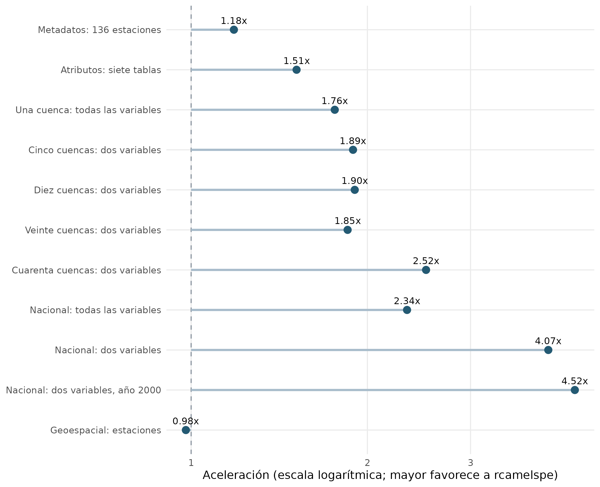

Rendimiento de rcamelspe: comparación reproducible con RCamelsPE
Source:vignettes/benchmark.Rmd
benchmark.Rmdrcamelspe combina Arrow para leer y seleccionar datos
con collapse para uniones y transformaciones. Esta viñeta
evalúa el beneficio práctico frente al paquete RCamelsPE de Harold
Llauca, utilizando los mismos archivos locales y consultas con
resultados equivalentes. Destaca las ventajas medidas
de nuestra implementación y permite identificar las operaciones donde
conviene usarla. Los resultados corresponden a esta máquina y estas
revisiones; no garantizan la misma aceleración en otros equipos.
Resultados: dónde es más eficiente rcamelspe
En esta ejecución, rcamelspe obtuvo una mediana menor en
10 de 11 escenarios. La mayor aceleración fue
4.52 veces en Nacional: dos variables, año
2000, con una reducción de tiempo del 77.9 %.
Se verificó la equivalencia en todos los escenarios antes de medir.
Cada celda muestra mediana [percentil 25–percentil
75], en segundos, de siete repeticiones. La aceleración es
mediana(RCamelsPE) / mediana(rcamelspe): valores mayores
que uno favorecen a rcamelspe; valores menores que uno
favorecen a RCamelsPE.
| Escenario | RCamelsPE | rcamelspe | Aceleracion |
|---|---|---|---|
| Metadatos: 136 estaciones | 0.007 [0.007–0.007] | 0.006 [0.006–0.006] | 1.18x |
| Atributos: siete tablas | 0.060 [0.059–0.061] | 0.040 [0.039–0.042] | 1.51x |
| Una cuenca: todas las variables | 0.033 [0.030–0.035] | 0.019 [0.018–0.019] | 1.76x |
| Cinco cuencas: dos variables | 0.162 [0.156–0.165] | 0.086 [0.083–0.088] | 1.89x |
| Diez cuencas: dos variables | 0.326 [0.320–0.330] | 0.172 [0.169–0.174] | 1.90x |
| Veinte cuencas: dos variables | 0.640 [0.640–0.649] | 0.346 [0.339–0.347] | 1.85x |
| Cuarenta cuencas: dos variables | 1.467 [1.440–1.513] | 0.582 [0.578–0.603] | 2.52x |
| Nacional: todas las variables | 2.364 [2.194–2.392] | 1.011 [1.005–1.070] | 2.34x |
| Nacional: dos variables | 2.285 [2.155–2.348] | 0.561 [0.557–0.565] | 4.07x |
| Nacional: dos variables, año 2000 | 2.494 [2.470–2.512] | 0.552 [0.549–0.555] | 4.52x |
| Geoespacial: estaciones | 0.009 [0.008–0.009] | 0.009 [0.009–0.009] | 0.98x |

Aceleración calculada a partir de las medianas. La línea vertical indica igualdad de tiempo.
Los intervalos intercuartílicos describen dispersión, no son intervalos de confianza. En operaciones de pocos milisegundos, diferencias pequeñas pueden cambiar con el ruido del sistema. Se muestran todos los escenarios y no se descartan repeticiones con recolección de basura.
Lectura práctica de los resultados
-
Nacional: todas las variables: 1.011 s con
rcamelspey 2.364 s conRCamelsPE(2.34x). -
Nacional: dos variables: 0.561 s con
rcamelspey 2.285 s conRCamelsPE(4.07x). -
Nacional: dos variables, año 2000: 0.552 s con
rcamelspey 2.494 s conRCamelsPE(4.52x). -
Diez cuencas: dos variables: 0.172 s con
rcamelspey 0.326 s conRCamelsPE(1.90x).
Corrección del cuello de botella de diez cuencas
La implementación anterior cambiaba al maestro al superar cinco
cuencas: escaneaba unos 178 MiB incluso para una selección pequeña. El
perfil de rutas mostró aproximadamente 0,16 s para diez archivos frente
a 0,53 s para el maestro; con cuarenta archivos, la relación se invertía
(0,66 s frente a 0,53 s). Estas mediciones exploratorias motivaron el
cambio; la tabla principal contiene la validación repetida del código
final. El perfil exploratorio (medianas de tres llamadas por ruta, dos
hilos) se conserva en inst/benchmarks/routing-profile.csv;
no se mezcla con el benchmark final.
Ahora se compara el tamaño de los CSV solicitados, más una estimación
de 4 MiB por apertura de archivo, con el tamaño del maestro. Así se
tiene en cuenta tanto el volumen a leer como la sobrecarga de múltiples
lectores. Es una heurística calibrada con estos datos, no una garantía
del punto óptimo para todos los discos. global = TRUE
mantiene el control explícito. No se introduce una caché de datos.
| Consulta | Anterior_s | Actual_s | Mejora_interna |
|---|---|---|---|
| Diez cuencas | 0.515 | 0.172 | 3.00x |
La referencia anterior se conserva en
inst/benchmarks/before-routing/, junto con sus mediciones,
entorno y hashes. Corresponde a una ejecución anterior; para comparar
paquetes en la misma ejecución se debe usar la tabla principal.
Escenarios y decisiones de implementación
El archivo maestro medido ocupa 177.64 MiB y contiene 2.235.296 filas. Las consultas nacionales abarcan las 136 estaciones; las consultas por cuenca usan los mismos identificadores en ambos paquetes.
| Escenario | Trabajo realizado por ambos paquetes | Utilidad |
|---|---|---|
| Metadatos | Leer stations.csv completo |
Inventario de estaciones |
| Atributos | Leer y unir las siete tablas por gauge_id
|
Regionalización |
| Una cuenca | Serie completa, diez variables | Exploración de una estación |
| Cinco, diez, veinte y cuarenta cuencas | Serie completa de prec y flow_obs, con
identificadores |
Procesamiento por lotes |
| Nacional completo | Archivo maestro, todas las filas y variables | Análisis nacional |
| Nacional proyectado | Archivo maestro, prec y flow_obs, con
identificadores |
Selección de variables |
| Nacional, año 2000 | Misma selección, limitada a un año | Calibración y validación |
| Geoespacial | GeoPackage de estaciones completo | Control basado en sf
|
Para los lotes se usa el modo habitual por cuenca de
RCamelsPE. rcamelspe decide su ruta
automáticamente según el coste estimado de los CSV. Se compara así la
experiencia de uso sin forzar al paquete de referencia a una ruta menos
conveniente. Los escenarios nacionales fuerzan
global = TRUE en ambos paquetes.
La revisión evaluada de RCamelsPE no ofrece argumentos
de fecha en read_timeseries(). En el escenario anual, se
añade dplyr::filter() a su lectura dentro del
tiempo medido. rcamelspe aplica
start_date y end_date en su consulta. Ambos
entregan la misma ventana y las mismas columnas.
Cómo contribuyen nuestras mejoras
-
Lectura selectiva:
arrow::read_csv_arrow()proyecta columnas para consultas pequeñas. En la ruta nacional,arrow::open_dataset()aplica selección y filtros antes de materializar eldata.framefinal. -
Uniones y lotes:
collapse::join()combina atributos ydplyr::bind_rows()reúne archivos individuales conservando sus tipos. Se reemplazócollapse::rowbind()tras detectar atributos corruptos en lotes repetidos de diez cuencas durante la verificación. - Consulta temporal integrada: los límites de fecha se validan en el lector, facilitando ventanas de trabajo reproducibles.
-
Control de lectura:
global = TRUEpermite elegir el maestro;dateygauge_idpueden incluirse en la selección de variables.
CSV es texto: proyectar y filtrar no implica saltarse físicamente todos los bytes o filas descartados, como podría ocurrir con datos columnarios particionados. El beneficio se evalúa con los resultados, sin equipararlo a una reducción proporcional de lectura del disco.
La descarga de CAMELS-PE 1.0.1, el respeto de version y
set_path y la protección frente a descargas parciales
mejoran el uso del paquete, pero no intervienen en estos tiempos. Se
excluye la red para separar lectura local y conexión.
Comprobación de equivalencia
Antes del cronómetro, el script crea copias independientes para no
alterar los resultados de los lectores. Ordena filas por
gauge_id y date, ordena las columnas y
normaliza contenedores (tibble/data.frame) y
representaciones numéricas. Compara todas las columnas,
con tolerancia numérica 1e-8, conservando los valores
faltantes. En objetos espaciales verifica geometrías y sistema de
referencia. Una discrepancia detiene la ejecución. Esta validación no
forma parte del tiempo medido.
| Escenario | Filas | Columnas | Equivalente |
|---|---|---|---|
| Metadatos: 136 estaciones | 136 | 15 | Sí |
| Atributos: siete tablas | 136 | 65 | Sí |
| Una cuenca: todas las variables | 16436 | 12 | Sí |
| Cinco cuencas: dos variables | 82180 | 4 | Sí |
| Diez cuencas: dos variables | 164360 | 4 | Sí |
| Veinte cuencas: dos variables | 328720 | 4 | Sí |
| Cuarenta cuencas: dos variables | 657440 | 4 | Sí |
| Nacional: todas las variables | 2235296 | 12 | Sí |
| Nacional: dos variables | 2235296 | 4 | Sí |
| Nacional: dos variables, año 2000 | 49776 | 4 | Sí |
| Geoespacial: estaciones | 136 | 14 | Sí |
CAMELS-PE usa el calendario común 1981–2025. flow_obs y
flow_sim están en mm/día y prec_var es
varianza de precipitación. Los NA permanecen como
faltantes: no se rellenan para mejorar los tiempos. El conjunto local se
identifica mediante hashes; no se le atribuye una versión de Zenodo sin
verificar su procedencia.
La tabla de equivalencia describe los archivos efectivamente medidos,
no una certificación del contenido de una publicación. Por ejemplo, el
número de columnas de la unión de atributos incluye
gauge_id y debe interpretarse según el diccionario local,
sin sustituirlo por el total anunciado de otra versión.
Qué sabemos sobre memoria
Se conserva object.size() de la salida en
equivalence.csv. No mide el pico de RAM ni
asignaciones temporales. Arrow puede asignar memoria fuera del
gestor de R; un perfil de asignaciones de R tampoco bastaría para
comparar consumo total. No se afirma un ahorro porcentual de memoria sin
medirlo a nivel del proceso.
Método reproducible
- Ambos paquetes se cargan antes de medir y leen el mismo directorio local.
- Se eligen los primeros identificadores ordenados alfabéticamente, evitando seleccionar manualmente cuencas favorables.
- Se fijan dos hilos tanto para Arrow como para
readr. - Se ejecuta un calentamiento por paquete y escenario, utilizado también para verificar equivalencia. La prueba es de caché caliente: no se vacía la caché del sistema operativo.
- Se realizan siete repeticiones, aleatorizando el orden de los
paquetes en cada par con semilla
20260905. La recolección explícita de basura ocurre antes del cronómetro; la que ocurra dentro de la llamada sí queda incluida. - Se registra tiempo de pared con
Sys.time(). Para metadatos y estaciones espaciales se promedian 20 llamadas por repetición, evitando tiempos nulos por resolución del reloj; los demás escenarios usan una llamada por repetición. Se excluyen instalación, calentamiento, validación y generación del informe.
Referencia: RCamelsPE 1.0.1, revisión 40af1422d2b9.
La versión local es rcamelspe 0.1.0 con las mejoras del
repositorio; code-manifest.csv registra hashes del código
utilizado.
Volver a ejecutar
La medición intensiva es explícita: no se dispara al construir la documentación. Los CSV incluidos permiten regenerar esta viñeta sin descargar datos ni instalar el paquete de referencia. Para medir de nuevo, desde la raíz del repositorio:
git clone https://github.com/hllauca/RCamelsPE.git tmp/benchmark-reference
git -C tmp/benchmark-reference checkout 40af1422d2b9893973ffae7f4678136860f09c52
# Preparación (solo una vez):
install.packages(c('pkgload', 'remotes'))
remotes::install_deps('.', dependencies = TRUE)
remotes::install_deps('tmp/benchmark-reference', dependencies = TRUE)
# Desde una terminal, sustituir las rutas:
# Rscript inst/benchmarks/run-benchmark.R /datos/CAMELS-PE tmp/benchmark-reference inst/benchmarks/results 7
rmarkdown::render('vignettes/benchmark.Rmd')inst/benchmarks/results/ contiene
timings.csv (cada repetición), summary.csv
(estadísticos), equivalence.csv (verificaciones),
data-manifest.csv (tamaños y hashes de entrada),
code-manifest.csv (código local) y session.txt
(entorno). Si se cambia la revisión de referencia, hay que actualizar
upstream-commit.txt junto con los resultados.
#> UTC: 2026-09-05 02:54:14
#> Repetitions: 7
#> Threads: Arrow=2, readr=2
#> Timer: Sys.time; metadata/gauges: 20 calls per repetition, others: 1.
#> CPU: AMD64 Family 23 Model 96 Stepping 1, AuthenticAMD
#> Dataset: local CAMELS-PE; version not independently verified; see hashes.
#> sysname release machine
#> "Windows" "10 x64" "x86-64"
#> Logical CPUs: 6
#> R version 4.6.1 (2026-06-24 ucrt)
#> Platform: x86_64-w64-mingw32/x64
#> Running under: Windows 11 x64 (build 26200)
#>
#> Matrix products: default
#> LAPACK version 3.12.1
#>
#> locale:
#> [1] C
#> system code page: 65001
#>
#> time zone: America/Lima
#> tzcode source: internal
#>
#> attached base packages:
#> [1] stats graphics grDevices utils datasets methods base
#>
#> other attached packages:
#> [1] rcamelspe_0.1.0 RCamelsPE_1.0.1 testthat_3.3.2
#>
#> loaded via a namespace (and not attached):
#> [1] generics_0.1.4 class_7.3-24 KernSmooth_2.23-27 hms_1.1.4
#> [5] magrittr_2.0.5 grid_4.6.1 RColorBrewer_1.1-3 pkgload_1.5.3
#> [9] rprojroot_2.1.1 pkgbuild_1.4.8 e1071_1.7-17 brio_1.1.5
#> [13] DBI_1.3.0 purrr_1.2.2 scales_1.4.0 cli_3.6.6
#> [17] crayon_1.5.3 rlang_1.3.0 units_1.0-1 bit64_4.8.6
#> [21] withr_3.0.3 otel_0.2.0 tools_4.6.1 parallel_4.6.1
#> [25] tzdb_0.5.0 dplyr_1.2.1 ggplot2_4.0.3 assertthat_0.2.1
#> [29] vctrs_0.7.3 R6_2.6.1 proxy_0.4-29 lifecycle_1.0.5
#> [33] classInt_0.4-11 bit_4.6.0 vroom_1.7.1 arrow_25.0.1
#> [37] pkgconfig_2.0.3 desc_1.4.3 pillar_1.11.1 gtable_0.3.6
#> [41] glue_1.8.1 Rcpp_1.1.2 sf_1.1-2 collapse_2.1.8
#> [45] tibble_3.3.1 tidyselect_1.2.1 farver_2.1.2 readr_2.2.0
#> [49] compiler_4.6.1 S7_0.2.2Cómo aprovechar rcamelspe
Solicita las variables y fechas necesarias, reutiliza la ruta local y consulta el diccionario antes del análisis. Este patrón aprovecha la lectura selectiva:
path <- rcamelspe::get_camels_pe_path()
daily <- rcamelspe::read_timeseries(
global = TRUE,
vars = c('date', 'gauge_id', 'prec', 'flow_obs'),
start_date = '2000-01-01', end_date = '2000-12-31', path = path
)La elección depende del escenario. Consultas selectivas y lotes muestran el valor del motor de lectura; operaciones pequeñas o basadas en el mismo lector espacial pueden tener diferencias reducidas. La tabla completa permite justificar esa elección sin extrapolar la aceleración máxima a todo el paquete.